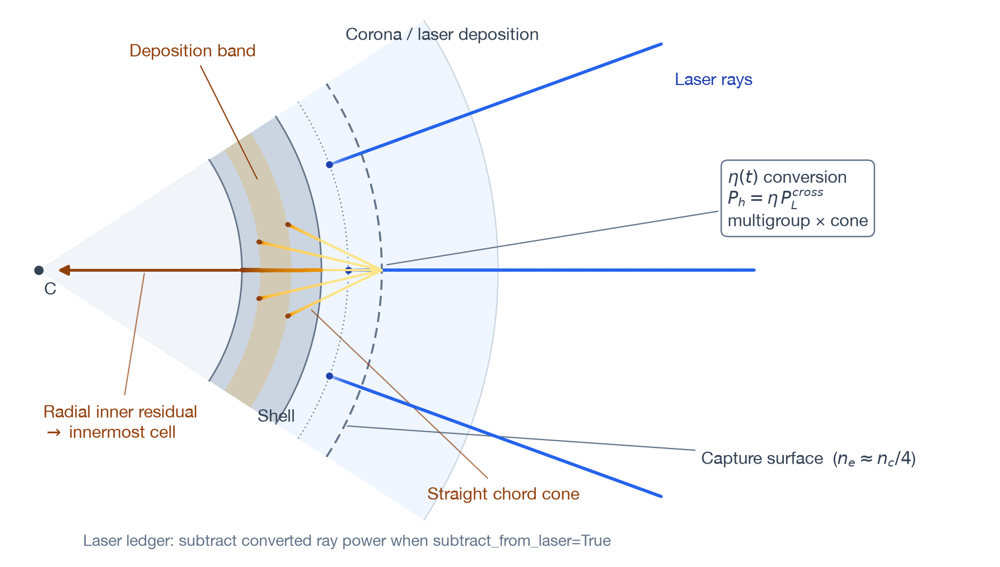

Hot electrons reference
TENRYU implements a Colaïtis (2015) / LILAC-style prescribed LPI (laser–plasma-instability) hot-electron preheat model as a chain of laser capture, exponential spectra, cone quadrature, straight-line transport, collisional stopping, and material-energy deposition. It is not a self-consistent solution of LPI wave growth or saturation: the conversion efficiency η(t) and hot-electron temperature are calibration inputs or outputs of a reduced closure.
The physical mechanism
Above intensity thresholds, laser-driven parametric instabilities — two-plasmon decay (TPD) and stimulated Raman scattering (SRS) — drive large-amplitude electron-plasma waves. The action concentrates near the quarter-critical density because there a daughter electron-plasma wave oscillates at about half the laser frequency, which is where the TPD and SRS frequency-matching conditions can be satisfied. The driven plasma waves trap and accelerate electrons to tens or hundreds of keV, far beyond the thermal bulk. Because their range is much longer than a thermal electron's, they penetrate the shell ahead of the shock and preheat the fuel, raising its adiabat and degrading compression. Quantifying that preheat is the purpose of this kernel.
The instabilities occupy kinetic, sub-wavelength scales that a radiation-hydrodynamics mesh cannot resolve, so TENRYU does not solve their wave growth or saturation. Following the Colaïtis/LILAC philosophy, the conversion efficiency η(t) and hot-electron temperature \(T_h\) (the namelist's T_hot_eV) are calibration inputs, or η is supplied by the reduced closure driven by local plasma quantities. The source is placed where the generation physics occurs: at each traced ray's first crossing of \(n_e=f_s n_c\), using the power that actually survives upstream absorption to that point.
Measured hot-electron spectra are approximately exponential in energy with a single temperature. TENRYU divides that exponential into logarithmic groups whose weights and flux-averaged representative energies come from analytic moments. Because each group weight is a difference of the cumulative distribution at its two edges, the intermediate terms cancel when summed, and \(\sum_g W_g=1\) holds exactly without numerical quadrature. Direction is a deterministic uniform cone around the capture direction, evaluated by quadrature rather than sampling and therefore bitwise reproducible.
Transport is deliberately explicit about its approximations: the chords are straight, with no refraction — these are roughly 100-keV electrons, not light — and v1 includes no angular scattering. Continuous slowing-down on free electrons uses relativistic kinematics and a Coulomb logarithm. The identity \(\Delta P=\dot N_g(E_{in}-E_{out})\) lets integration error move deposition only between neighboring cells, never create or destroy group power. Every watt is assigned to a deposited, escaped, or, where applicable, in-flight ledger. On the banked optical path (the path that reuses the stored per-ray upstream optical depths when evaluating capture power), the gate is that "deposited + unabsorbed + \(P_{hot}\) = input" closes to relative \(10^{-10}\).
Model scope and capture source
Set Laser.hot_electron.enable=True to activate the model. In the scalar prescription, every traced ray moving inward creates a source at its first upward crossing of \(n_e=f_s n_c\). The default \(f_s=\)source_nc_fraction is 0.25, representing a source near the quarter-critical LPI region. A trace segment containing the crossing is split at the event. Inverse-bremsstrahlung (IB) absorption on the upstream part is applied first, so the source uses the power that actually reaches the capture surface rather than the power at the segment entrance.
\(P_{ray}^{cross}\) is post-upstream-processing power. On the supported CBET coexistence path, capture records come from the final post-CBET propagation, not from nominal beam power before CBET exchange. CBET and hot electrons are otherwise mutually exclusive; the sole relaxed combination is cbet.geometry_mode="port_section" with eta_mode="model", which follows this post-CBET rule.
There are four ways to supply η(t). For the one-cone shorthand, eta_hot gives a constant and eta_hot_table gives a time table frozen during initialization. A sources list defines up to four mechanism-resolved cone, TPD, or SRS channels, each with its own capture surface, constant or tabulated η, temperature, spectral window, and angular band. Multiple channels fire in ascending \(f_s\) order and deplete the laser sequentially. Finally, eta_mode="model" evolves η from local plasma conditions. All four are reduced prescriptions for generation; none turns this feature into a self-consistent LPI solver.
Multigroup spectrum and cone angles
The source number flux follows an exponential spectrum with temperature \(T_h\). T_hot_eV is expressed in eV, not keV.
- \(P_h=\eta P^{cross}_{ray}\) — the post-IB crossing power: the capture segment is split at the crossing event and upstream IB is applied first, so the source sees crossing-point power rather than segment-entry power.
- \(T_h=\texttt{T\_hot\_eV}\,\mathrm{eV\_to\_erg}\) — the configured spectrum temperature is converted from eV to erg before the energy moments are evaluated.
- \(W_g\) and \(E_g\) — analytic moments built from \(\phi_1\) and \(\phi_2\), with \(u=E/T_h\) the normalized energy, \(u_{g\pm1/2}\) the group edges, and \(u_{min},u_{max}\) the window edges; the differences telescope to \(\sum_g W_g=1\), while \(E_g\) is the group's flux-averaged energy.
- Cone quadrature — Gauss–Legendre nodes in \(\mu\) times uniform nodes in \(\phi\), with direction weights summing to one.
- \(f_s=\texttt{source\_nc\_fraction}=0.25\) — the default quarter-critical capture anchor.
subtract_from_laser— the Manley-style no-double-count contract: after capture, \((1-\eta)P^{cross}\) continues down the laser path.
The code places n_energy_groups logarithmic groups over \([E_{min},E_{max}]=[\texttt{E\_min\_over\_Th}T_h,\texttt{E\_max\_over\_Th}T_h]\). Analytic moments of the exponential give each group its power weight and flux-averaged representative energy. The defaults are 30 groups and \([0.2,8]T_h\). Power outside that window is not discarded; the in-window groups are renormalized so their weights sum to one.
With angular_model="cone", the capture direction is the axis of a uniform solid-angle cone with half-angle theta_div_deg. The polar cosine uses an n_mu-point Gauss–Legendre rule and the azimuth uses n_phi uniformly spaced points; all angular weights sum to one. Increasing the half-angle distributes the same source power over chords with different lengths and areal densities. The alternative radial mode marches inward at \(\mu=1\) for verification. It is not a production substitute for finite cone divergence.
Straight-line transport and deposition

Transport paths are straight chords without refraction or angular scattering. In spherical geometry, analytic intersections with shell faces produce inbound, pericenter, and outbound segments. A source inside a cell starts with the exact partial segment to the first face. Within each cell, \(n_e,T_e,\rho\) are frozen while an adaptive RK4 integration advances continuous-slowing-down (CSDA) free-electron stopping, using relativistic velocity and a Coulomb logarithm.
$$ \Delta P_{i,g}=\dot N_g\left(E_{in}-E_{out}\right). $$Bookkeeping always uses the number flux times the entry-to-exit energy loss. Integration accuracy can therefore move deposition between neighboring cells, but it cannot change total group power. Energy remaining at the thermalization floor is deposited locally, and power leaving the outer boundary enters the escape ledger. inner_bc="deposit_residual" applies only to radial mode: residual energy reaching the inner boundary is placed in the innermost non-void cell. The "escape" alternative records it as escaped. Cone chords turn at their pericenters and continue outward, so they do not use this radial-only boundary rule.
From capture to heating, step by step
- Capture events are found on traced rays. A crossing segment is split, upstream IB is applied first, and the event records the crossing power. Captures in the ghost-corona band — trace cells outside the outermost physical cell — are clamped to the boundary cell, counted, and reported.
- The ray ensemble is reduced to a fixed 16-bin \((\text{source cell},\mu_{axis})\) table. Each bin retains power-weighted, continuous representatives for both \(\mu_{axis}\) and source radius \(r_s\), without snapping the launch point to a cell face.
- Each populated bin is expanded into logarithmic energy groups and the deterministic cone directions, carrying the product of its spectral and angular weights.
- Each beamlet marches along its chord. Analytic shell intersections order inbound, pericenter, and outbound legs and retain the exact partial first segment; per-cell \(n_e,T_e,\rho\) are frozen while adaptive RK4 integrates CSDA stopping with a 2% energy-per-substep target and at most 256 substeps per cell.
- Each cell receives \(\Delta P=\dot N(E_{in}-E_{out})\). The remainder at the thermalization floor is deposited locally, outer-boundary crossings escape, and a radial-mode inner residual follows
inner_bc. - Ledgers are closed and matter is coupled. Per-cell hot-electron power joins the laser source channel after deposition smoothing; a 2T run heats electron internal energy. The named
"hot_electron"limiter bounds the next step by \(\Delta t\le f_E\min_{P_i>0}(m_i e_{e,i}/P_i)\), with \(f_E=\texttt{explicit\_source\_limit}\).
Laser ledger, matter coupling, and timestep
With subtract_from_laser=True, a captured ray continues with \((1-\eta)P_{ray}^{cross}\). This prevents the converted power from being counted in both thermal laser absorption and hot-electron preheat. Setting it to False is an intentional additive sensitivity mode that injects external hot-electron energy without depleting the laser; it is not the normal closed-energy configuration. For multiple channels, a downstream channel sees the power left by upstream channels.
Per-cell hot-electron power joins the laser source channel after laser-deposition smoothing. Standard source injection then heats electron specific internal energy in a two-temperature calculation or the single total matter energy in a one-temperature calculation. To prevent an excessive explicit energy increment in one step, the named "hot_electron" limiter uses the preceding step's deposited power to limit the next timestep.
Here \(m_i\) is the mass of cell \(i\) (not an ion mass) and \(e_{e,i}\) its specific electron internal energy, so \(m_ie_{e,i}\) is the cell's electron energy reservoir. This is the same construction as the burn kernel's identically named explicit_source_limit — dt ≤ \(f_E\) × available internal energy / deposited power — differing only in the reservoir: electron energy here, electron-plus-ion internal energy there. It is a dedicated explicit-source guard, not another name for the laser CFL limit. Diagnostics track source, deposited, and escaped power and their conservation residual; depletion from subtract_from_laser is also reflected in the laser ledger.
Physics-model option for η(t)
eta_mode="model" replaces constant or tabulated η with an opt-in first-order relaxation closure for TPD and SRS channels in 1D spherical geometry. Each step evaluates \(T_e\) and the density scale length \(L_n\) near the channel's evaluation surface. Illumination intensity comes from the previous step's raw capture-crossing power. A reduced TPD or SRS threshold parameter gives \(\eta_{eq}=0\) below threshold and a saturating equilibrium efficiency above it, subject to per-channel hard caps and a total-efficiency cap. The update uses either a fixed or Vu-2012-style relaxation time and an exact exponential step.
The intensity measurement is one-step lagged. η starts at zero, the first step measures crossing power, and nonzero evolution begins on the following step. This option requires TPD/SRS entries in sources, subtract_from_laser=True, single-rank 1D_SPH, and rejects scalar shorthand. Although local conditions drive η, the closure does not resolve plasma waves, nonlinear LPI saturation, or kinetic electron generation.
Key controls
The principal Laser.hot_electron controls are listed below. The channel form cannot be combined with scalar shorthand keys.
| Key / mode | Default | Purpose |
|---|---|---|
enable | False | Enable hot-electron preheat. |
eta_hot | 0.0 | Constant efficiency for the one-cone shorthand. |
eta_hot_table | absent | η(t) table frozen at initialization; overrides the constant. |
sources | absent | Mechanism-resolved cone / TPD / SRS channels with constant or tabulated η. |
eta_mode="model" | "legacy" | Select the local-condition-driven TPD / SRS η(t) closure. |
source_nc_fraction | 0.25 | Single-source capture density \(n_e/n_c\). |
T_hot_eV | 5.0e4 | Exponential-spectrum temperature [eV]. |
n_energy_groups | 30 | Number of logarithmic energy groups. |
E_min_over_Th / E_max_over_Th | 0.2 / 8.0 | Multigroup spectral window \(E/T_h\). |
angular_model | "cone" | Cone transport; "radial" is for verification. |
theta_div_deg | 60.0 | Cone divergence half-angle [deg]. |
n_mu / n_phi | 6 / 8 | Polar-cosine / azimuth quadrature counts. |
subtract_from_laser | True | Sequentially subtract converted power from each ray. |
inner_bc | "deposit_residual" | Deposit radial-mode inner-boundary residual in the innermost cell. |
explicit_source_limit | 0.2 | \(f_E\) for the "hot_electron" timestep limiter. |
Verification and limits
- The scalar 1D bookkeeping identity \(|P_{dep}+P_{esc}-P_h|/P_h\) closes by construction; the GXII-derived smoke test measured at most \(7\times10^{-15}\).
- Mechanism-channel gates preserve the disabled GXII golden result at rel=0 over 53/53 snapshots and the scalar shorthand versus
sources=[cone]over 55/55 snapshots. In the three-channel 20-ps run, each channel closed within \(1.6\times10^{-14}\), and the sum of channel ledgers matched the total within \(3\times10^{-16}\). - The fixed planar angular-trend gate — a 200-cell planar slab with \(T_h\), η, and \(f_s\) held identical across all four legs, so launch angle is the only variable — places the 90% deposition depth at cells 154, 152, 144, and 142 for cone 0°, SRS 20°, cone 60°, and TPD 45°, respectively; its absorbed fractions are 0.734, 0.742, 0.805, and 0.820, in the pre-registered monotone order.
- The η(t) physics-model gates exercise the relaxation update and its capture, depletion, and diagnostic wiring.
The present stopping model omits bound-electron, plasmon, and degeneracy effects, collisional angular scattering, and reflux (the return of escaped electrons to the target by sheath electric fields). It can therefore underestimate stopping and overestimate range in cold, partially ionized matter. η and \(T_h\) remain calibration-dependent: results should be interpreted as the target's preheat response to the selected generation closure, not as a first-principles prediction of LPI.
References
- A. Colaïtis et al., "Coupled Hydrodynamic Model for Laser-Plasma Interaction and Hot Electron Generation," Phys. Rev. E 92, 041101(R) (2015). doi:10.1103/PhysRevE.92.041101
- H. X. Vu et al., "Hot-Electron Production and Suprathermal Heat Flux Scaling with Laser Intensity from the Two-Plasmon-Decay Instability," Phys. Plasmas 19, 102703 (2012). doi:10.1063/1.4757978
- R. K. Follett et al., "Simulations and Measurements of Hot-Electron Generation Driven by the Multibeam Two-Plasmon-Decay Instability," Phys. Plasmas 24, 102134 (2017). doi:10.1063/1.4998934
- E. Rovere et al., "Hot Electron Scaling for Two-Plasmon Decay in ICF Plasmas," Phys. Plasmas 30, 042104 (2023). doi:10.1063/5.0128052
- M. J. Rosenberg et al., "Origins and Scaling of Hot-Electron Preheat in Ignition-Scale Direct-Drive Inertial Confinement Fusion Experiments," Phys. Rev. Lett. 120, 055001 (2018). doi:10.1103/PhysRevLett.120.055001
- M. J. Rosenberg et al., "Stimulated Raman Scattering Mechanisms and Scaling Behavior in Planar Direct-Drive Experiments at the National Ignition Facility," Phys. Plasmas 27, 042705 (2020). doi:10.1063/1.5139226
- A. A. Solodov et al., "Hot-Electron Generation at Direct-Drive Ignition-Relevant Plasma Conditions at the National Ignition Facility," Phys. Plasmas 27, 052706 (2020). doi:10.1063/1.5134044
- A. Simon, R. W. Short, E. A. Williams, and T. Dewandre, "On the Inhomogeneous Two-Plasmon Instability," Phys. Fluids 26, 3107–3118 (1983). doi:10.1063/1.864037